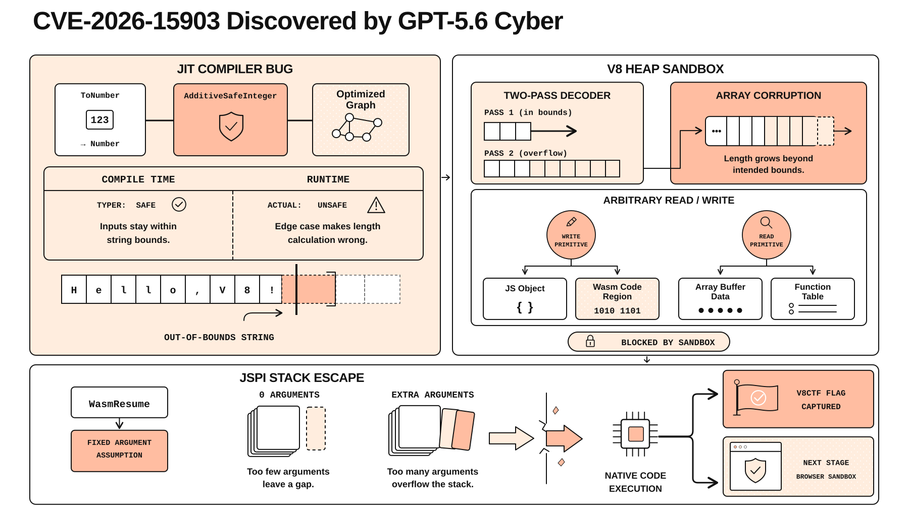

Expanding Daybreak as the Cyber Defense Window Narrows
Introducing new ways to unlock advanced cyber capabilities together with GPT‑5.6‑Cyber, our latest cybersecurity-specific model.
The cybersecurity world is rapidly changing—threat actors will increasingly use AI to conduct cyberattacks at unprecedented speed and scale, including in fully autonomous ways. As these capabilities spread, defenders have a narrowing window to prepare. Our answer is to put frontier intelligence in the hands of trusted defenders everywhere before attackers deploy offensive AI capabilities at scale.
We’re expanding OpenAI Daybreak with two access tiers designed to give approved defenders the right capabilities for their work:
Daybreak Blue provides access to frontier general-purpose models, including GPT‑5.6 Sol, with safeguards tailored to authorized defensive security work. It is the recommended starting point for most defenders, supporting vulnerability discovery, secure code review, malware analysis, incident response, and patch validation.
Daybreak Red provides access to our purpose-trained cybersecurity models for authorized vulnerability research, exploit validation, and security testing.
We’re also introducing GPT‑5.6‑Cyber, available through Daybreak Red. Built on GPT‑5.6 Sol, it is trained to improve capabilities on several specialized cybersecurity tasks (e.g., finding zero-day vulnerabilities and developing exploit chains) and to reduce refusals for certain higher-risk, dual-use cyber tasks.
Daybreak unlocks advanced cyber capabilities
As we previously shared, GPT‑5.6 Sol delivers state-of-the-art performance on cybersecurity tasks. In production, we deploy system-level safeguards to screen cybersecurity-related requests to prevent misuse, but they can also block legitimate defensive work. Daybreak Blue access removes those guardrails, helping defenders get more out of the model in real-world security tasks, including incident detection and response, investigations, vulnerability management, and security assessments.
Even without system-level guardrails, there are still highly dual-use cybersecurity prompts (e.g., pentesting production systems) where GPT‑5.6 Sol will refuse to comply. To address this, we trained GPT‑5.6‑Cyber, available through Daybreak Red access, to further reduce refusals and improve performance on certain tasks. GPT‑5.6‑Cyber helps trusted defenders conduct legitimate security activities.
To measure the reduced rate of refusals that is provided by GPT‑5.6‑Cyber through Daybreak Red access, we created an internal evaluation (Advanced Cybersecurity Completion Rate) that measures how often models will respond to requests involving exploit-chain development, authentication bypass, privilege escalation, and other advanced cybersecurity scenarios1. GPT‑5.6‑Cyber completes 95.0% of these requests, compared with just 1.5% for GPT‑5.6 Sol, and 2.0% when used with Daybreak Blue access. It also completes more requests than GPT‑5.5‑Cyber, which completes only 57.3% of requests, addressing feedback from security researchers who encountered persistent refusals with the earlier model.
Below we show a series of cybersecurity prompts and the associated model responses from GPT‑5.6 Sol with system-level guardrails, GPT‑5.6 Sol (Daybreak Blue), GPT‑5.5‑Cyber (Daybreak Red), and GPT‑5.6‑Cyber (Daybreak Red).
Improving cybersecurity performance
The GPT‑5.6‑Cyber model is trained to improve performance on certain cybersecurity workflows involving exploit development and advanced security research. On ExploitGym2, which evaluates whether agents can turn known vulnerabilities into working exploits that achieve arbitrary code execution in controlled environments, GPT‑5.6‑Cyber outperforms both GPT‑5.6 Sol and GPT‑5.5 Cyber.
Another area that GPT‑5.6‑Cyber is aimed to improve is the ability to find and accurately calibrate the severity of novel zero-day vulnerabilities. We created an internal evaluation dataset in which we provide models with the current release of an open-source repository. We then ask them to generate proof-of-concept exploits with the maximum possible impact alongside a technical write-up of their findings. Models are evaluated on the severity and impact of their findings, as well as the calibration and quality of the accompanying technical write-up. GPT‑5.6‑Cyber (Daybreak Red) outperformed GPT‑5.6 Sol (Daybreak Blue) on this benchmark due to its specialized training.
We also evaluated GPT‑5.6‑Cyber on our internal Vulnerability Discovery and Report Writing evaluation, which gives an agent an open-ended prompt to find vulnerabilities in a repo with a known vulnerability. Models gain points on this evaluation by finding severe and actionable vulnerabilities (either novel or known vulnerabilities), developing a working proof-of-concept, and submitting a high-quality vulnerability report. Both GPT‑5.6 Sol and GPT‑5.6‑Cyber improve over GPT‑5.5‑Cyber. GPT‑5.6‑Cyber performs worse than GPT‑5.6 Sol on this evaluation, which we believe is due to the model sometimes producing shorter, less detailed vulnerability reports.
Finally, we measured exploit development capabilities on ExploitBench3, an evaluation testing an agent’s ability to develop a V8 vulnerability into a full exploit. This exploitation task is harder than ExploitGym — more defensive protections, such as the V8 sandbox, remain enabled, and the agent is given less information about the vulnerability to exploit. In the standard setting, which limits agents to 300 turns, GPT‑5.6 Sol (Daybreak Blue) solves tasks more token-efficiently and performs best. If we expand beyond the standard 300-turn setting to 600 turns, the performance gap between the two models narrows.
Aside from results on evaluation benchmarks, we also provided early access to GPT‑5.6‑Cyber to a group of trusted customer partners. These customers have successfully used the models to accelerate their defensive workflows to great success:
Finding and patching vulnerabilities in real-world software
GPT‑5.6‑Cyber’s capabilities extend beyond research benchmark performance to real-world vulnerability research. Real-world vulnerability research often requires sustained reasoning across large, unfamiliar codebases. Researchers must form and test hypotheses, trace interactions among multiple components, reproduce unexpected behavior, and determine whether a suspected vulnerability can be exploited in practice.
Since the GPT‑5.6‑Cyber model finished training, we have used it to extensively study and improve selected software projects. For example, we used GPT‑5.6‑Cyber to investigate V8, the JavaScript engine used by Chrome. We uncovered two previously unknown vulnerabilities that could be chained to corrupt memory and escape the V8 heap sandbox. Our researchers validated the findings and reported them to Google through coordinated vulnerability disclosure. Google fixed the vulnerability, assigning it as CVE-2026-15903.
CVE-2026-15903 is a high-severity vulnerability in V8, Chrome’s JavaScript engine. Its optimizing compiler incorrectly skipped a safety check when converting values to integers, allowing undefined values to produce an unexpectedly large number instead of the expected result.
If that number is used as an array index, the compiler may incorrectly assume it falls within the array’s bounds and omit the usual bounds check. An attacker can then read or overwrite memory belonging to other objects, potentially executing arbitrary code inside Chrome’s sandbox. Escaping the heap sandbox would generally require a second vulnerability, which GPT‑5.6‑Cyber found as well. The below diagram provides an overview of this high-severity vulnerability.

Aside from these V8 vulnerabilities, we have also used GPT‑5.6‑Cyber to identify high-severity issues in software that ranges from popular databases to mobile phones:
At least five vulnerabilities in a popular mobile operating system, including a chain from an untrusted app to local privilege escalation.
Three critical vulnerabilities in a popular database, including a remote path to code execution.
Over 400 vulnerabilities that can lead to privilege escalation in a popular operating system kernel.
We are working closely with Daybreak partners and members of the open-source community to disclose and remediate these mobile OS, database, and kernel vulnerabilities.
Preparedness Evaluations
Under our Preparedness Framework, the GPT‑5.6 Sol model was assessed as High for cybersecurity capability and below the Critical threshold. Before launching GPT‑5.6‑Cyber, we also evaluated its frontier cyber capabilities and determined that it similarly reaches the High threshold but not the Critical threshold. The model improved over GPT‑5.6 Sol on some specialized cyber tasks that we directly trained for, but not sufficiently to reach our Critical threshold. Note that as we mentioned in our updates to the Hugging Face incident, GPT‑5.6‑Cyber was not involved in exploiting Hugging Face, nor are any other models planned for an upcoming release.
We will publish a system card with further evaluations of GPT‑5.6‑Cyber at a later date.
Access and safeguards
Models running with reduced safeguards carry risks beyond standard model usage, whether from misuse or misalignment. Despite these risks, we believe that democratizing access to frontier intelligence for defenders is crucial to accelerating and automating cyber defense.
Daybreak Blue and Daybreak Red access are available for approved individuals(opens in a new window) and organizations conducting authorized work. We control access through identity verification, account security, monitoring, approved-use restrictions, and legal attestations.
We are also taking additional steps to enable safer use of cyber models:
We are strongly encouraging Daybreak customers using Codex to switch from full-access mode to auto-review mode through app defaults and UI features. Auto-review evaluates actions requiring elevated permissions before execution and can block requests that pose a significant risk of destructive behavior.
We are requiring all individual accounts in Daybreak to adopt hardware security keys, beginning September 1, 2026.
We are actively working on additional security measures, including improved monitoring, which we intend to roll out in the coming weeks.
We are prioritizing alignment training and testing for upcoming Daybreak releases.
We’ve updated our Codex documentation on safety best practices to help teams keep cyber-capable agents within their intended security boundaries.
Best practices for using the Daybreak series include:
Sandbox and isolate. Run security workflows in controlled environments without access to sensitive production systems or the open internet. Regularly test sandbox boundaries.
Monitor agent actions. Use auto-review mode(opens in a new window) to review tool calls outside the Codex sandbox before they execute. Add further monitoring and human oversight for higher-risk workflows.
Define the scope. Specify which systems and actions are authorized. Use scoped permission profiles(opens in a new window) to enforce those boundaries.
Organizations can also customize the review policy(opens in a new window) for their specific workflows.
We recommend Daybreak Blue as the starting point for most defenders. Teams whose authorized work includes advanced vulnerability research, exploit development, or red teaming can request Daybreak Red access for our most advanced cyber models. Apply to join the program at openai.com/daybreak/partners.
1. For all evaluations, we show the performance of each model using the highest publicly available reasoning level. Note that GPT‑5.6‑Cyber tends to be more extensive and comprehensive than GPT‑5.6 Sol in its reasoning budget, leading to higher token usage.
2. All ExploitGym evaluations were conducted using our new internal implementation in security-hardened, isolated environments, with strict monitoring for misaligned behaviors.
3. ExploitBench evaluations were conducted using our internal implementation in security-hardened, isolated environments.